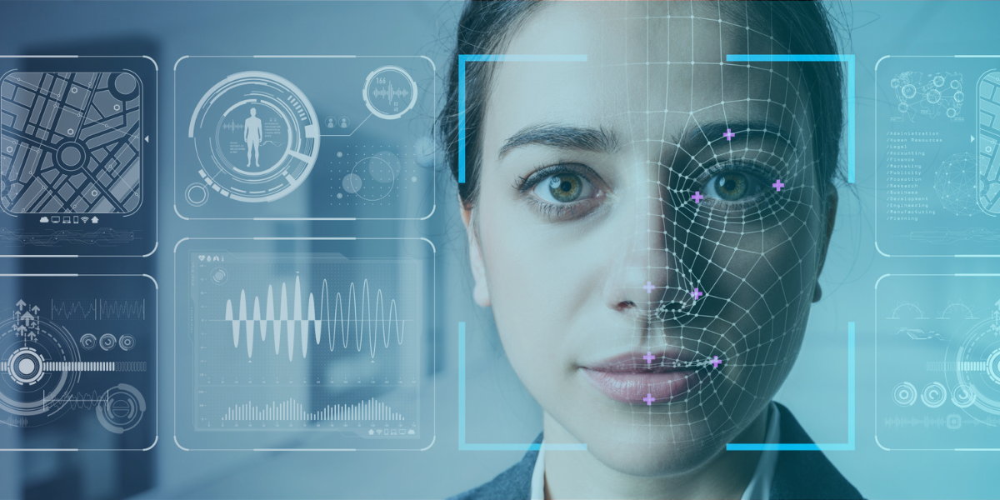
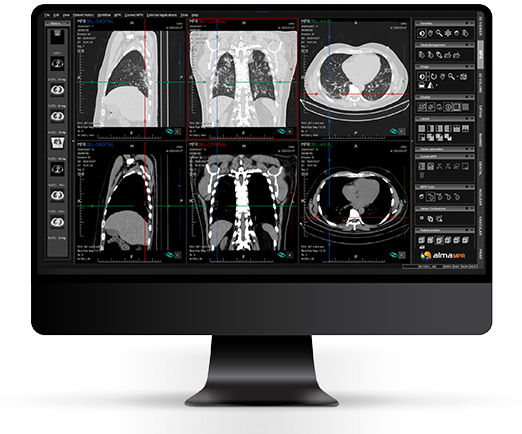

VISION POR COMPUTADORA
La visión por computadora (o Computer Vision) es una disciplina de la Inteligencia Artificial y la ciencia de la computación que dota a las máquinas de la capacidad de "ver", procesar y comprender el mundo visual. Mientras que una cámara tradicional solo captura y almacena una imagen, la visión por computadora permite que los sistemas analicen esa información visual ya sean fotos, videos o transmisiones en directo para extraer significado, reconocer patrones y tomar decisiones. A los humanos nos parece natural ver una foto y entenderla al instante, pero para una computadora, una imagen digital es simplemente una enorme cuadrícula de números (píxeles) que representan valores de color y brillo. Gracias al Deep Learning (específicamente a las redes neuronales convolucionales o CNN), las computadoras hoy pueden superar estos desafíos imitando de manera digital las capas del sistema visual biológico.
¿COMO FUNCIONA?
El proceso imita de forma digital el sistema visual humano:
- Adquisición de la imagen:El sistema recibe los datos a través de una cámara o sensor visual.
- Procesamiento y análisis:Mediante algoritmos avanzados de aprendizaje automático (Machine Learning) y redes neuronales profundas (Deep Learning), la computadora descompone la imagen en píxeles, identifica bordes, formas, colores y texturas.
- Interpretación y acción:El sistema comprende lo que está viendo (por ejemplo, clasifica un objeto, detecta un movimiento o mide una distancia) y emite una respuesta o acción.
APLICACIONES PRINCIPALES
|
Reconocimiento facial: |
Utilizado para desbloquear teléfonos inteligentes o en sistemas de seguridad. |
|
Vehículos autónomos: | Permite a los coches detectar peatones, señales de tráfico, carriles y otros vehículos en tiempo real para navegar de forma segura. |
|
Medicina y salud: |
Ayuda a los médicos a analizar radiografías, resonancias magnéticas y biopsias para detectar anomalías o tumores con una precisión milimétrica. |
|
 |
 |
 |